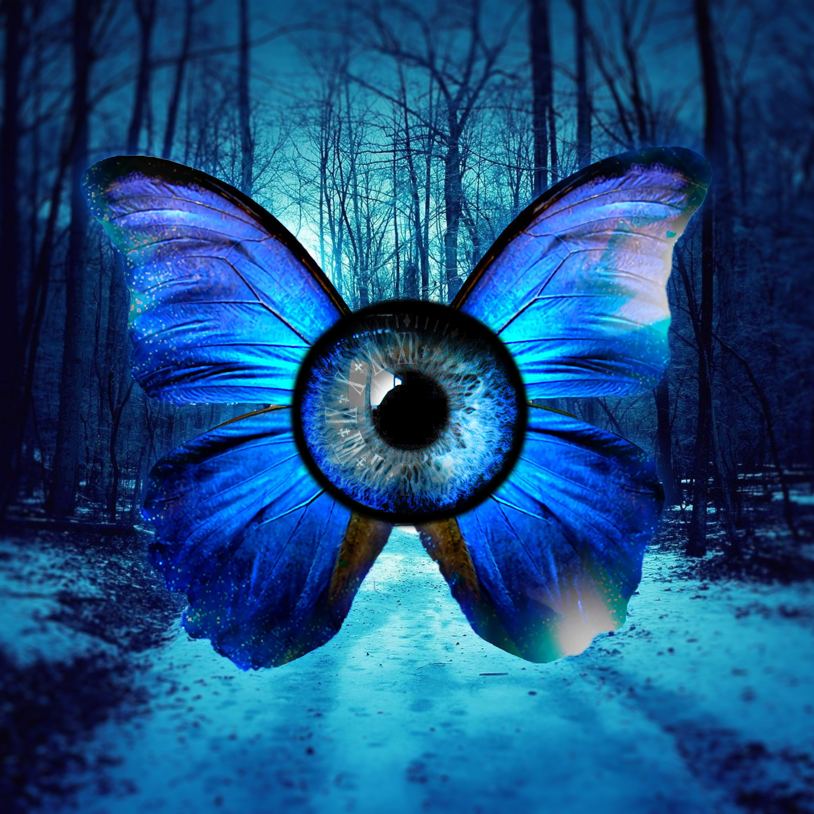
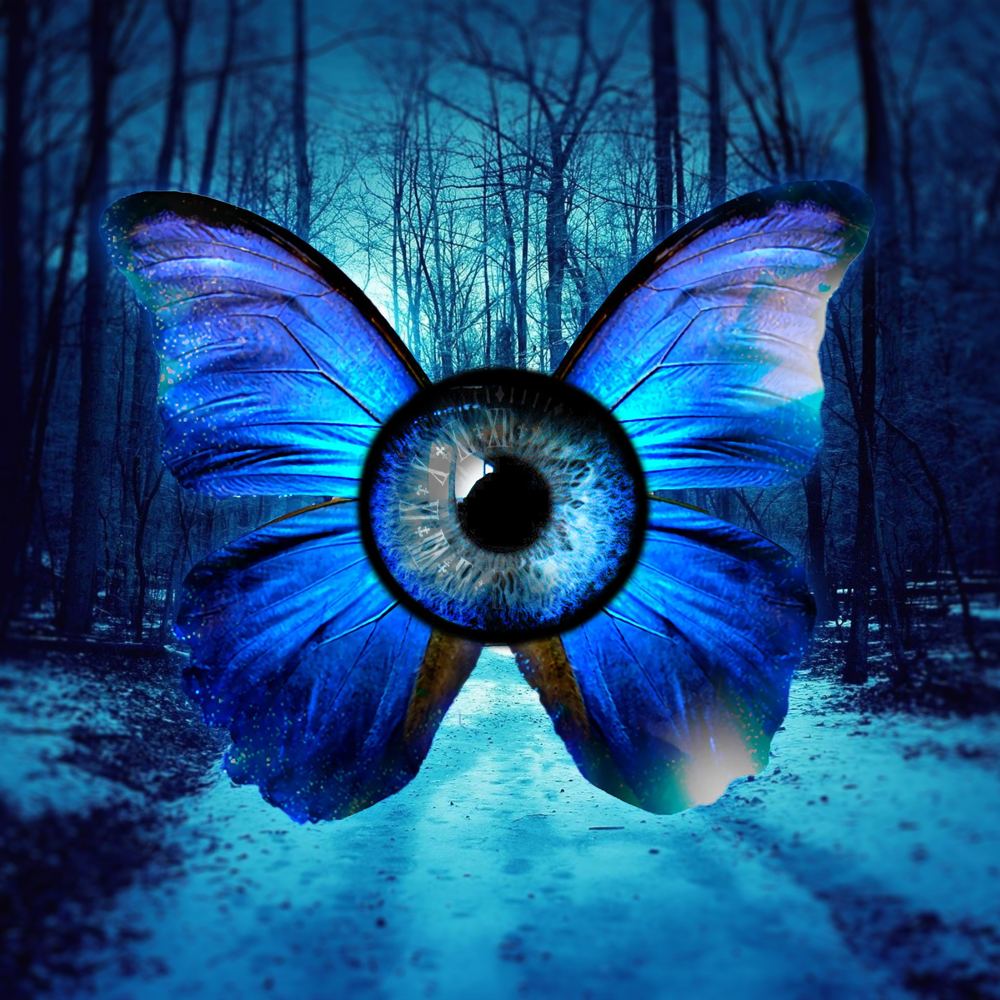

"retire"
I made this piece in After Effects. This all started from a moitionless 1000x1000px illustration done by someone online who goes by ExoticBacon. I brought this illustration to life by adding camera movement and special effects.
I made this piece in After Effects. This all started from a moitionless 1000x1000px illustration done by someone online who goes by ExoticBacon. I brought this illustration to life by adding camera movement and special effects.
 
